Workflow
Creating a documented, tested, modular, best-in-class scientific workflow.
Created: 2024-09-06 Fri 15:46
Current Workflow: Challenges
- Poor documentation
- Brittle code with hacks
- Insufficient testing, hard to validate outputs
- Prone to breaking
- Inflexible, one-size-fits-all approach
Key Problem: One Workflow to Rule Them All
- Over-reliance on Software team for tweaks
- High surface area for bugs
- Includes unnecessary features, complicates maintenance
New Workflow: Goals
- Best-in-field scientific automation
- High standards of Software Engineering
- Comprehensive documentation
- Rigorous testing to scientific standards
- Adopts latest standards and languages
Documentation
- High-level rationale and standards
- Of workflow stages.
- Complete, researcher-friendly code documentation.
Testing
- Hypothesis testing: automatic generation of 100's of test cases
- Unit testing: 95%+ code coverage, immediate feedback
- End-to-end workflow tests
Modularity
- Container-based: Reproducible, stable, latest scientific stack
- Script-based: Components can be reused for custom workflows, customisable
Cylc: Workflow Engine
- Advanced monitoring tools
- NeSI support and community
- Designed to be easy to create workflows
Running the new workflow
user@nesi $ # copies some files to inputs folder
user@nesi $ cylc install cybershake
# or their own custom workflow!
user@nesi $ cylc play cybershake
user@nesi $ cylc log cybershake # watch the workflow
Notice
- No environment management
- No complicated task config
- No slurm database locking
Shiny Monitoring Tools

Case Study: Cesar's Workflow
The Problem
Cesar wants to run a simulation, where each realisation has two SRFs, only one modified.
Old Workflow
- Struggle with where the code relevant to his experiment is
- Struggle to change this code because it is not written to be read
- Fight the workflow manager because it expects to be running Cybershake
New Workflow
- Write his own SRF processor
- Copy the cylc flow, add his own stage in between
- Deploy to NeSI, go home early
New Workflow
- High-level, searchable documentation available
- Scripts are reliable; extensive testing in place
- Researchers can build and deploy their own Cylc workflow without needing to understand our code.
Current Status

Roadmap
- WIP Core hour usage monitoring
- WIP New advanced visualisation tools
- WIP Automated quality assurance
- WIP Documentation automation
- WIP Multi-segment simulations
- DONE Enhanced scientific defaults
- DONE Up to 2x performance improvements